The Peninsula Tour
Where Oceans Meet
Encounter mythical meeting places, discover fascinating local wildlife, and explore world-famous, carefully tended botanical gardens that showcase rare and seasonal blooms.
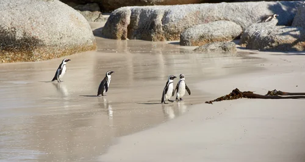
Comfort. Convenience. Experience the
Western Cape in unparalleled style with Avodah
Tours & Travels.
For more than a decade, our seasoned travel planners have been transforming wanderlust into seamless,
carefully crafted itineraries, blending deep firsthand destination knowledge with trusted, well-
established industry partnerships and a keen eye for memorable details that elevate every trip. We
negotiate exclusive perks and added value on your behalf, coordinate intricate logistics with meticulous
precision, and thoughtfully curate experiences tailored to your tastes, tempo, and travel preferences.
From the very first spark of an idea and throughout every planning milestone, through the journey itself
and right up to your final touchdown back home, we remain by your side, providing attentive support,
practical guidance, and reliable assistance to ensure a smooth, rewarding, and truly memorable travel
experience.
Avodah Tours brings style and comfort to your business or holiday trip, ensuring that high-end service follows you wherever you go. For peace of mind, look no further than Avodah Tours & Travels for confidence, comfort, and convenience.
To enhance your luxury drive, all vehicles are fitted with added complimentary comfort amenities for your enjoyment.
We specialize in a variety of services, tailored to meet all our clients’ travel requirements and individual needs. Our highly skilled, knowledgeable, and experienced team ensures a reliable, personalized, and exceptional experience.
Your comfort is our highest priority. We specialize in bespoke travel services, meticulously tailored to accommodate your individual needs and personal preferences with thoughtful attention. From the moment you step into our vehicles, you can relax and enjoy a selection of complimentary luxury amenities, convenient extras, and the professional care of our highly skilled, attentive team — all dedicated to ensuring every journey is smooth, secure, and genuinely enjoyable from start to finish.
Encounter mythical meeting places, discover fascinating local wildlife, and explore world-famous, carefully tended botanical gardens that showcase rare and seasonal blooms.

Lush green valleys, rugged mountains, and world-class estates. The Cape Winelands are among the most scenic regions on Earth, offering sweeping vistas, historic vineyards, and a rich tapestry of natural and cultivated beauty.
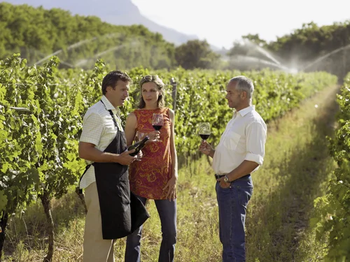
Discover iconic, bucket-list landmarks and gain a richer, deeper insight into why Cape Town consistently ranks among the world’s most unmissable, must-visit destinations.
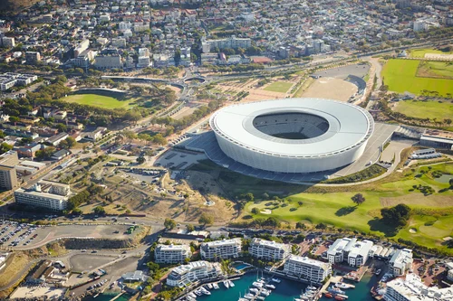
South Africa’s coasts, from Cape Town to the Garden Route, are golf havens. Avodah turns a golf trip into a tailored journey across dramatic Atlantic links and lush parkland courses—minus the logistics.
Curated Course Access: We provide coveted access and pre-booked tee times at championship venues and exclusive private clubs along the coast and through the Winelands.
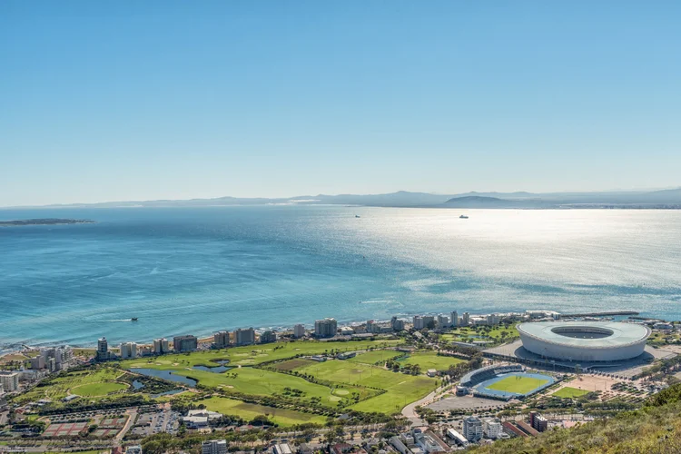
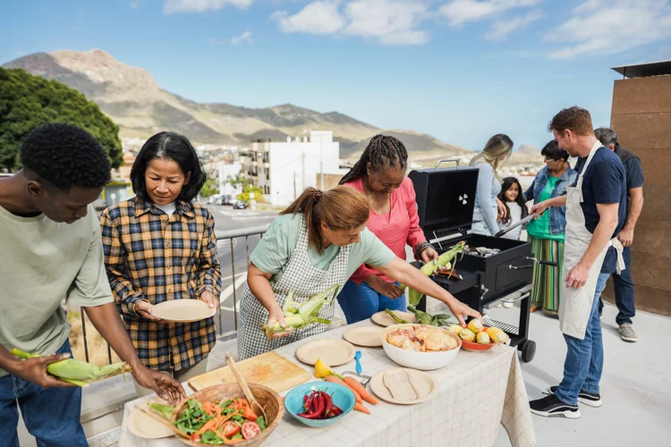
Indulge in the true “Taste of the Cape.” Avodah curates personalized culinary excursions, leading you deep into South Africa’s vibrant food culture. Explore the dynamic fusion of flavors—from traditional Cape Malay spice routes to world-class fine dining—and experience the region’s artistry firsthand.
Bespoke Wine & Food Pairings: Access exclusive, private tastings with acclaimed vintners in the Cape Winelands, perfectly pairing the region’s best wines with locally sourced ingredients.
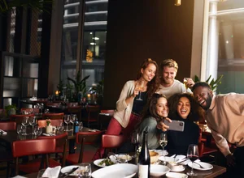
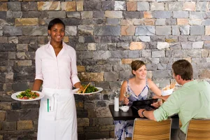
Embark on the adventure of a lifetime, reimagined for the discerning traveler. Avodah provides bespoke access to South Africa’s most exclusive private game reserves and untouched wilderness areas. Witness Africa’s iconic wildlife, including the majestic Big Five—lion, leopard, rhino, elephant, and buffalo—from the absolute comfort and luxury of world-class lodges.
Exclusive Private Reserves: We secure bookings in premier reserves known for ethical wildlife viewing, low visitor volume, and exceptional photographic opportunities.
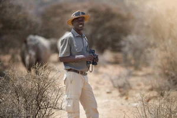
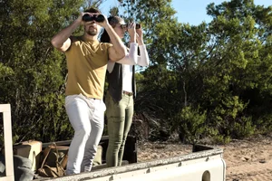
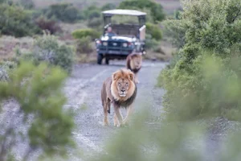
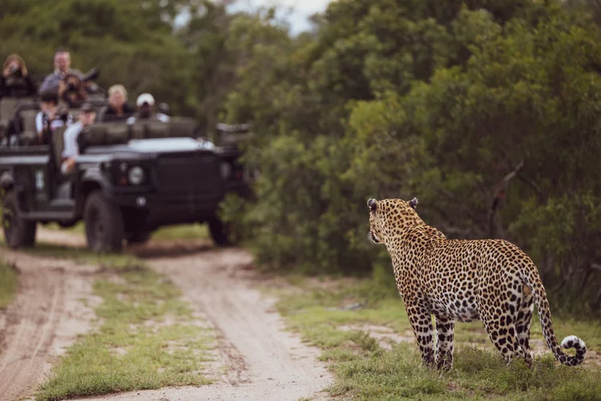
Explore the thriving local beer scene on an unforgettable guided tour. Whether you’re a seasoned hop-head or new to the world of brewing, our Beer Tour offers a behind-the-scenes look at the craftsmanship, passion, and unique flavours defining local brewing culture.
What You’ll Experience:
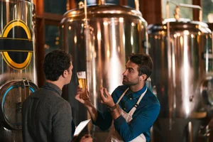
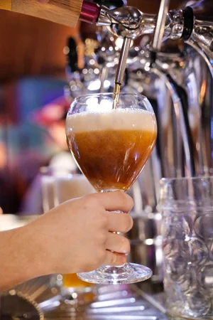
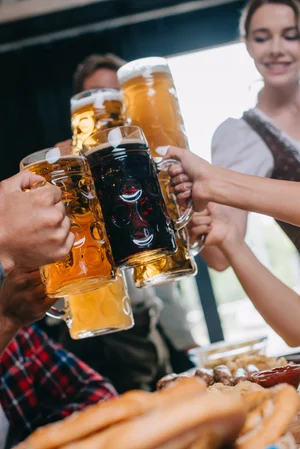
Absolutely. During an initial consultation, we discuss your comfort range and design proposals that maximize value without compromising quality.
A transparent planning fee is outlined after our first conversation, reflecting the complexity of your trip and credited toward your final invoice once you proceed.
Our support team remains on call 24/7 to adjust reservations, coordinate new arrangements, and ensure your journey stays on track.
Ready to see how your ideas translate into an unforgettable, tailor-made itinerary? Reach out today for a complimentary consultation, and let’s begin mapping the memorable moments you’ve been imagining — together, step by inspired step — thoughtfully crafting each detail to reflect your tastes, preferences, and dreams, while ensuring every experience is personalized, seamless, and truly yours. If you’re ready, we’ll collaborate closely to refine each element, anticipate your needs, and create lasting memories designed around what matters most to you.